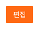

주황 버튼의 포인터 반응
DS-037 · 적용·대표 확인기본 주황과 흰 글씨는 유지
기본 #ff6914 + 흰 글씨는 이미 정한 그대로다. 버튼 크기·문구·모서리도 유지한다. 이번 변경은 포인터를 올렸을 때의 바탕색 하나다.
변경 전: 기존 공용 주황 버튼에는 호버 배경색이 없어, 포인터를 올려도 기본색과 같다. 적용: 기존 주황 태그의 호버에 쓰는 main-orange-dark · #e65817을 연결한다. 포인터가 떠나면 기존 주황으로 돌아온다.
기본 유지 · #ff6914
호버 적용 · #e65817
새 색을 추가하지 않고 기존 주황 바탕의 호버 패턴을 재사용한다. DS-014의 주요 실행 중립색 결정은 코드 이름이 primary인 이 버튼들의 기본색을 바꾸라는 뜻이 아니다.
밝은 공지 목록과 어두운 오류 화면
실제 앱의 기본·호버 상태를 비교한다. 두 사용처에서 기본색·크기를 유지하고 포인터 호버에서만 진해지는 것을 확인했다.
공지 목록 · 기본

공지 목록 · 호버 적용
오류 화면 · 기본
오류 화면 · 호버 적용
DS-037 적용 완료
사용자 승인대로 적용했다. 새 프로덕션 빌드의 공지 목록·404 화면에서 기본·호버·이탈과 크기·흰 글씨 유지를 확인했다. 측정 기록.
다음은 기존 DS-005의 확인창·행동 문구 연결이다. 접근성 후속은 마지막에 진행한다. 이유·범위.